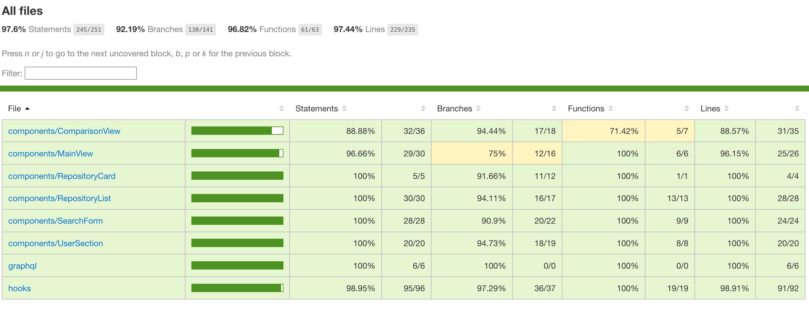

Create a .env file in the root directory with your GitHub token (check .env.example for reference):
VITE_GITHUB_TOKEN=your_token_here
Start the development server:
npmrundev
If you want to fork this and run the workflows, you need to add your access token as GH_TOKEN to your repo secrets.
The application will be available at http://localhost:5173
Docker Setup
Create a .env file as described above
(check .env.example for reference)
Build and run with Docker:
# Build the image dockerbuild-tgithubstats-dev.
# Run the container dockerrun-it\ --env-file.env\ -p5173:5173\ -v $(pwd):/app\ -v/app/node_modules\ gitstats-dev
Testing
Running Tests
Run the entire test suite:
npmruntest
You might get a few warnings about the props and components in the ThemeToggle component being invalid, which is fine, since these props are needed for the framer motion library.
Run tests in watch mode (for development):
npmruntest:watch
Generate coverage report:
npmruntest:coverage
The test coverage report can be found in coverage/lcov-report/index.html
The remaining uncovered code is for a few trivial lines.

Running Storybook
Storybook provides a sandbox environment for developing and testing components in isolation:
npmrunstorybook
Future Improvements
Avoiding the Github Rate Limit
A main issue with this app is that the GitHub v4 API has a rate limit of 5000 nodes expanded per hour, rather than requests.
To prevent users from hitting the rate limit, I made the decision to only fetch the first 100 commits for a repo in the last 3 months, instead of fully visualizing the commit history.
Since you have to expand the nodes to get the date of a commit, we would need to rely on an external webhook to fetch the data.
Image Snapshot Tests for Commit Line Chart
Due to the nature of the react-chart-js-2 library, you are supposed to mock it with an empty canvas to test that it renders correctly.
This means that regular testing with jest does not work, so image snapshot testing needs to be implemented to test that the chart renders with the correct data.
Versus Mode
The Versus mode is a feature I added to this project to allow users to compare their own stats to another user, you can find the implementation on the comparisonview branch. The autocompletion and keybind for the searchform are disabled for convenience.
The UI in this branch varies a lot, so more elaborate storybook stories should be made here.
Smoother animations could be implemented for the appearance and disappearance of the versus mode.
The test coverage of this branch is also a bit worse, so more tests should be made.
Global State Management
As the app grows in complexity, it would need a better mechanism to manage global state, in order to prevent prop drilling.
I would like to implement a state management library like Redux or Zustand in the future, as adding the versus mode already had me pass down props down the component tree multiple times.
Feature Additions
Adding another query to fetch the amount of open, merged, and closed pull requests or issues for a user would be a nice addition, but I would need to find a more aesthetic way to display the data, in order to not clash with the other user stats.